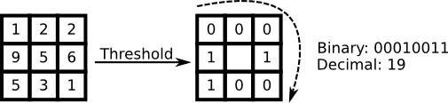

Local Binary Pattern (LBP) is a very efficient texture operator which labels the pixels of an image by thresholding the neighborhood of each pixel and considers the result as a binary number. The LBP feature vector, in its simplest form, is created in the following manner :

- Divide the examined window into cells (e.g. 16x16 pixels for each cell).
- For each pixel in a cell, compare the pixel to each of its 8 neighbors (on its left-top, left-middle, left-bottom, right-top, etc.). Follow the pixels along a circle, i.e. clockwise or counterclockwise.
- In the above step, the neighbours considered can be changed by varying the radius of the circle around the pixel, R and the quantisation of the angular space P.
- Where the center pixel's value is greater than the neighbor's value, write "0". Otherwise, write "1". This gives an 8-digit binary number (which is usually converted to decimal for convenience).
- Compute the histogram, over the cell, of the frequency of each "number" occurring (i.e., each combination of which pixels are smaller and which are greater than the center). This histogram can be seen as a 256-dimensional feature vector.
- Optionally normalize the histogram.
- Concatenate (normalized) histograms of all cells. This gives a feature vector for the entire window.
The feature vector can now then be processed using some machine-learning algorithm to classify images. Such classifiers are often used for face recognition or texture analysis.
Types of Local Binary Patterns in ImageFeatures.jl
ImageFeatures.jl provides the following types of local binary patterns :
lbp
The original local binary patterns